Header Builder / Settings
Configure Drag and Drop Header Builder
- Login into your WordPress site and open the Administration Panel.
- Go to Dashboard > Appearance > Customize
- Open > Header Builder / Settings
- Follow the instruction below in the image shown and build your awesome header
- Click Save & Publish.
- or click the link below and learn form video tutorial 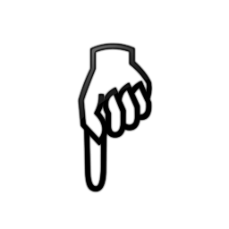
- Drag & Drop Header Builder
Note: Header Builder Capibality and Limits
- We have added this new feature 'Drag and Drop Header Builde' to make our visitors and client more easy and convienent to make the awesome header
- By using this header builder not only layout decided manu can be made but you can customize and make any kind of header as you wish.
- You can customizer top header as you desiger
- you can now custumize each item by dragging and droping in any postion inside the header
- This Builder let you use customize each section setting like each section controls Listed Below
- custome height and width of each section
- custome color choosing option for each section
- custome margin and pading option for each section
- custome positioning for each section
- option to add the bg color and image in each section
Configure Slider Settings

Add New Slider
- Login into your WordPress site and open the Administration Panel.
- First of all, create a Page for slider
- Add Page Title,Excerpt/Content and feature Image for slider in Page field.
- Click Save > Publish.
Configure Slider Section
- Login into your WordPress site and open the Administration Panel.
- Go to Dashboard > Appearance > Customize
- Open > Main Slider Settings
- Main Slider Settings > Manage all Other Slider Settings/Options with (Slider Type & Slider Layout) Per as You Want.
- Click Save > Publish.
Configure HomePage Settings
Online eStore Provides a "Home Page" template for your home page. Please follows these steps to configure your home page with "home page" template.
HomePage Setting
- Login into your WordPress site and open the Administration Panel.
- Go to Dashboard > Pages > Add New
- Enter the Page Title for the Page. You do not require to enter anything in the content section for creating a home page.
- Select the Home Page Template from the Page Attributes section.
- Click Publish
Configuring the front Page display setting
- Login into your WordPress site and open the Administration Panel.
- Go to Appearance > Customize > Static Front Page.
- Select A static page under Front Page displays.
- Click Save & Publish.

Note : Remember that Online eStore WooCommerce themes fully base on Widget so first configer home page using widget.
WooCommerce Category Collection
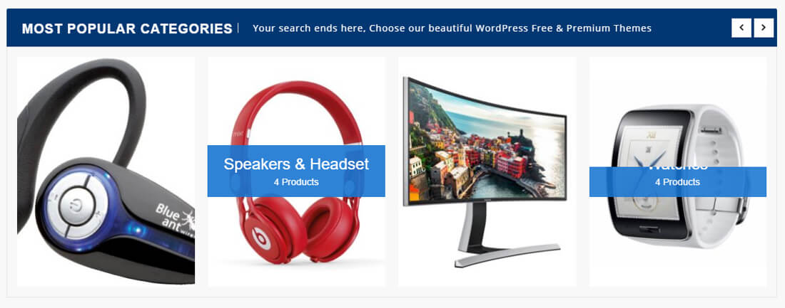
Configure WooCommerce Category Collection
- Login into your WordPress site and open the Administration Panel.
- Go to Dashboard > Appearance > Widgets
- Open > Widgets > Sparkle : Main Widget Area or SP: Top FullWidth Widget Area (Pro) or SP: Buttom FullWidth Widget Area (Pro)
- Drag & Drop "SP : Woo Category Collection" & Manage woocommerce category collection options per as you want
- Click Save > Publish.
SP: Single Product Offer (Pro)
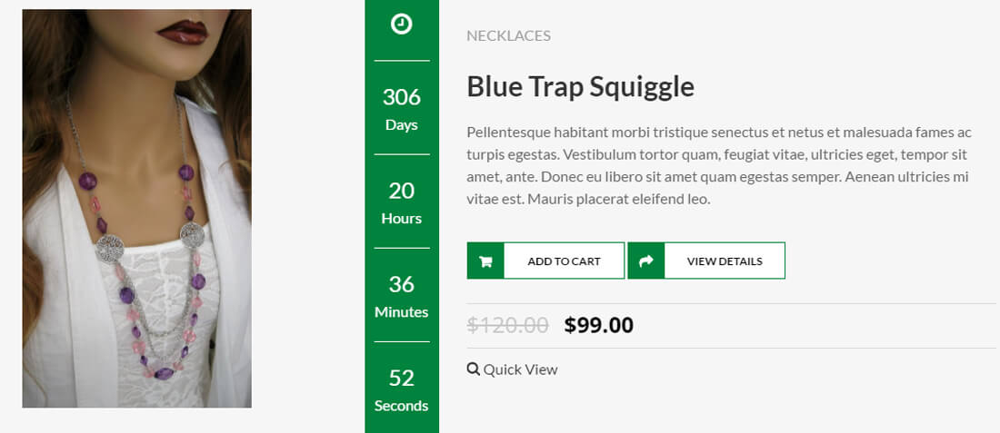
Configure SP: Single Product Offer (Pro)
- Login into your WordPress site and open the Administration Panel.
- Go to Dashboard > Appearance > Widgets
- Open > Widgets > Sparkle : Main Widget Area or SP: Top FullWidth Widget Area (Pro) or SP: Buttom FullWidth Widget Area (Pro)
- Drag & Drop "SP: Single Product Offer (Pro)" & Manage All Single Product Offer(Pro) Widget Options Per as You Want
- Click Save > Publish.

SP: Woo Products List (Pro)
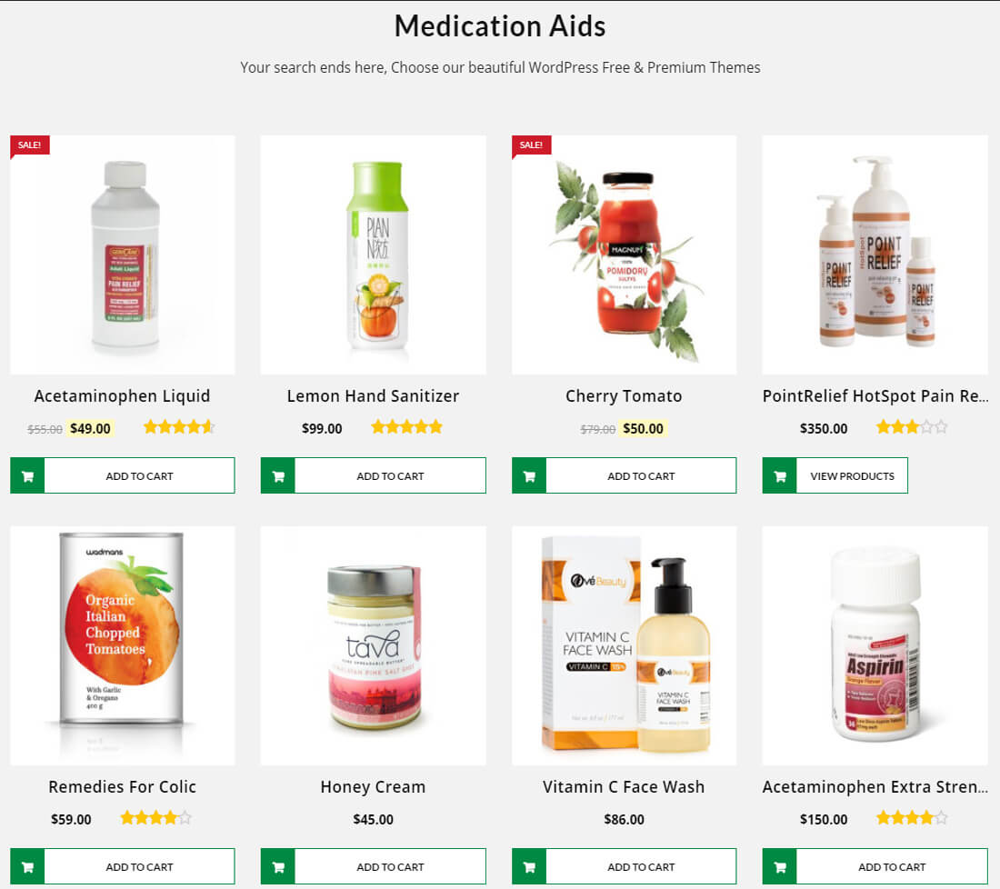
Configure SP: Woo Products List (Pro)
- Login into your WordPress site and open the Administration Panel.
- Go to Dashboard > Appearance > Widgets
- Open > Widgets > Sparkle : Main Widget Area or SP: Top FullWidth Widget Area (Pro) or SP: Buttom FullWidth Widget Area (Pro)
- Drag & Drop "SP: Woo Products List (Pro)" & Manage All SP: Woo Products List (Pro) Widget Options Per as You Want
- Click Save > Publish.
SP: Woo Product Type (Pro)
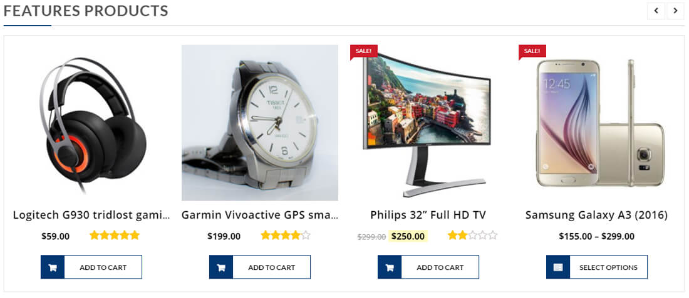
Configure SP: Woo Product Type (Pro)
- Login into your WordPress site and open the Administration Panel.
- Go to Dashboard > Appearance > Widgets
- Open > Widgets > Sparkle : Main Widget Area or SP: Top FullWidth Widget Area (Pro) or SP: Buttom FullWidth Widget Area (Pro)
- Drag & Drop "SP: Woo Product Type (Pro)" & Manage All Woo Product Type (Pro) Widget Options Per as You Want
- Click Save > Publish.
SP: Woo Special Offer Deal (Pro)
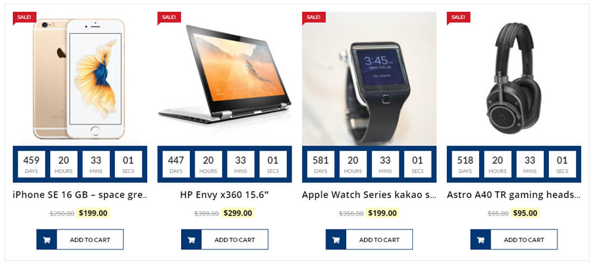
Configure SP: Woo Special Offer Deal (Pro)
- Login into your WordPress site and open the Administration Panel.
- Go to Dashboard > Appearance > Widgets
- Open > Widgets > Sparkle : Main Widget Area or SP: Top FullWidth Widget Area (Pro) or SP: Buttom FullWidth Widget Area (Pro)
- Drag & Drop "SP: Woo Special Offer Deal (Pro)" & Manage All SP: Woo Special Offer Deal (Pro) Widget Options Per as You Want
- Click Save > Publish.
WooCommerce Category Collection in Tabs
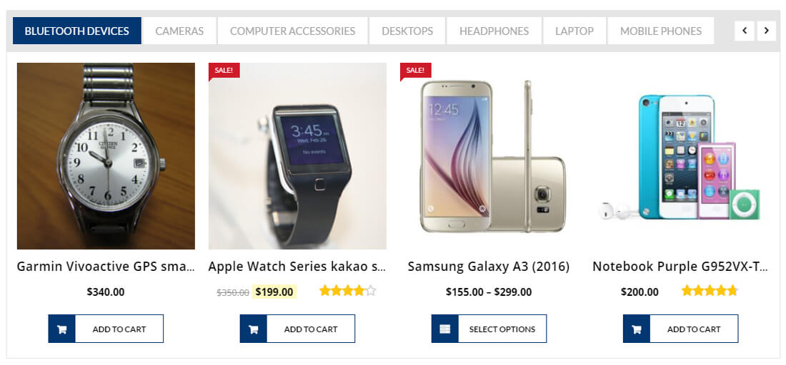
Configure WooCommerce Category Collection in Tabs
- Login into your WordPress site and open the Administration Panel.
- Go to Dashboard > Appearance > Widgets
- Open > Widgets > Sparkle : Main Widget Area or SP: Top FullWidth Widget Area (Pro) or SP: Buttom FullWidth Widget Area (Pro)
- Drag & Drop "SP : Woo Category Tabs" & Manage woocommerce category collection tabs options per as you want
- Click Save > Publish.
WooCommerce Category Features Image With Related Product
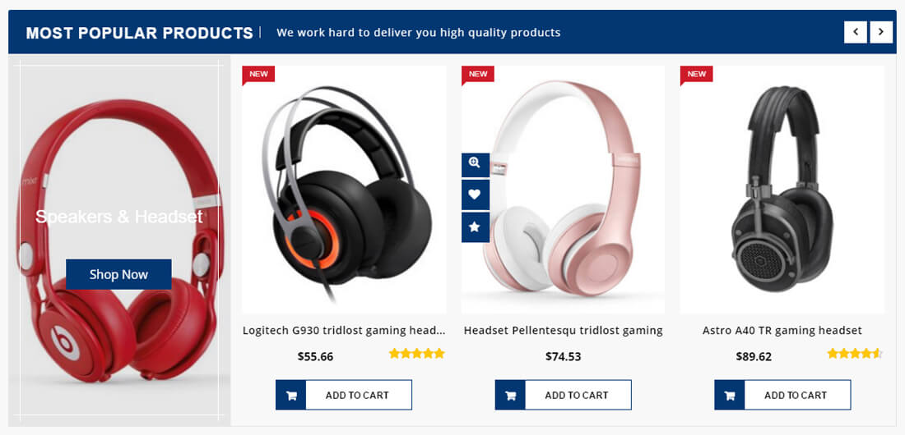
Configure WooCommerce Category With Product Section
- Login into your WordPress site and open the Administration Panel.
- Go to Dashboard > Appearance > Widgets
- Open > Widgets > Sparkle : Main Widget Area or SP: Top FullWidth Widget Area (Pro) or SP: Buttom FullWidth Widget Area (Pro)
- Drag & Drop "SP : Woo Category With Product" & Manage woocommerce category with product section options per as you want
- Click Save > Publish.
WooCommerce Product Type Section (Latest, Features, Upsell, OnSale or Category)
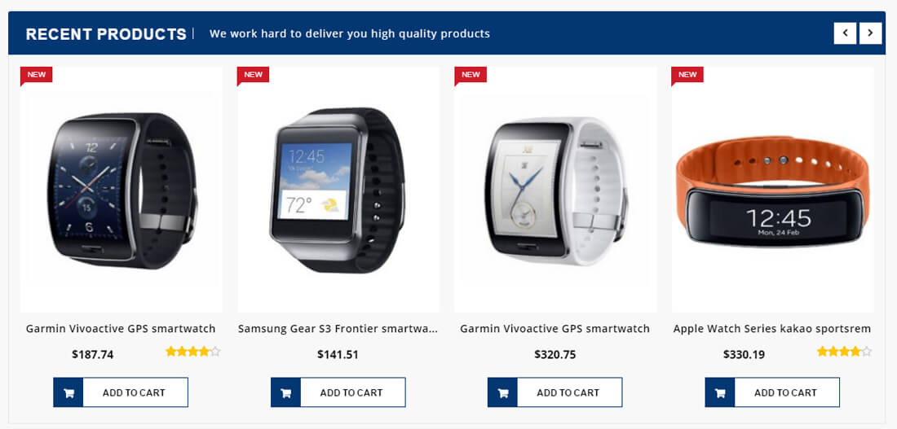
Configure WooCommerce Product Type Section
- Login into your WordPress site and open the Administration Panel.
- Go to Dashboard > Appearance > Widgets
- Open > Widgets > Sparkle : Main Widget Area or SP: Top FullWidth Widget Area (Pro) or SP: Buttom FullWidth Widget Area (Pro)
- Drag & Drop "SP : Woo Product Area" & Manage woocommerce product area sections options per as you want
- Click Save > Publish.
Blogs Widget Section
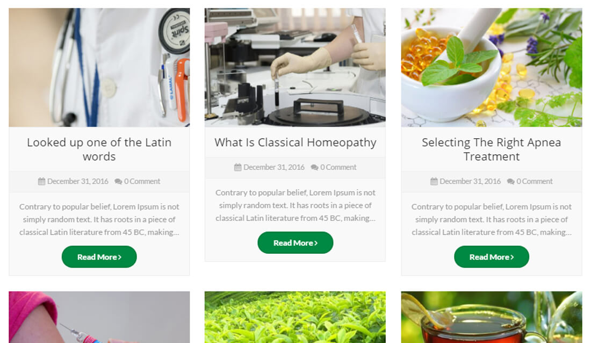
Configure Blogs Widget Section
- Login into your WordPress site and open the Administration Panel.
- Go to Dashboard > Appearance > Widgets
- Open > Widgets > Sparkle : Main Widget Area or SP: Top FullWidth Widget Area (Pro) or SP: Buttom FullWidth Widget Area (Pro)
- Drag & Drop "SP : Blogs Widget Section" & Manage blogs widget section options per as you want
- Click Save > Publish.
SP:Team Member Widget (Pro)
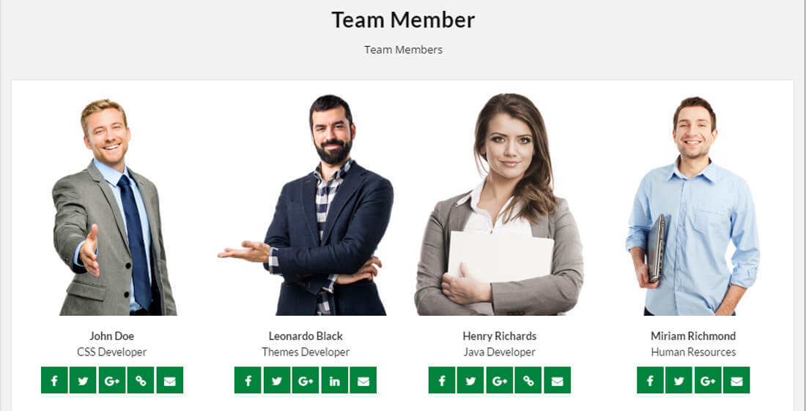
Configure SP:Team Member Widget (Pro)
- Login into your WordPress site and open the Administration Panel.
- Go to Dashboard > Appearance > Widgets
- Open > Widgets > Sparkle : Main Widget Area or SP: Top FullWidth Widget Area (Pro) or SP: Buttom FullWidth Widget Area (Pro)
- Drag & Drop "SP:Team Member Widget (Pro)" & Manage All SP:Team Member Widget (Pro) Widget Options Per as You Want
- Click Save > Publish.
SP: Testimonial Widget (Pro)
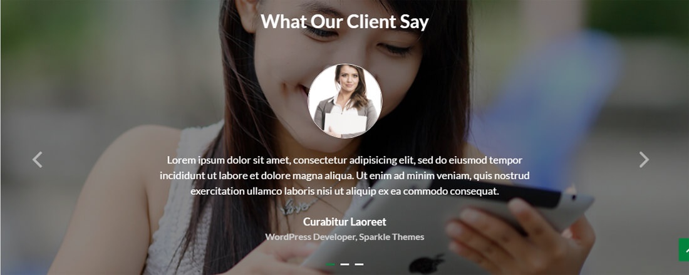
Configure SP: Testimonial Widget (Pro)
- Login into your WordPress site and open the Administration Panel.
- Go to Dashboard > Appearance > Widgets
- Open > Widgets > Sparkle : Main Widget Area or SP: Top FullWidth Widget Area (Pro) or SP: Buttom FullWidth Widget Area (Pro)
- Drag & Drop "SP: Testimonial Widget (Pro)" & Manage All SP: Testimonial Widget (Pro) Widget Options Per as You Want
- Click Save > Publish.
SP: Promo Video widget (Pro)
Configure SP: Promo Video widget (Pro)
- Login into your WordPress site and open the Administration Panel.
- Go to Dashboard > Appearance > Widgets
- Open > Widgets > Sparkle : Main Widget Area or SP: Top FullWidth Widget Area (Pro) or SP: Buttom FullWidth Widget Area (Pro)
- Drag & Drop "SP: Promo Video widget (Pro)" & Manage All SP: Promo Video widget (Pro) Widget Options Per as You Want
- Click Save > Publish.
SP: Promo Widget (Pro)
Configure SP: Promo Widget (Pro)
- Login into your WordPress site and open the Administration Panel.
- Go to Dashboard > Appearance > Widgets
- Open > Widgets > Sparkle : Main Widget Area or SP: Top FullWidth Widget Area (Pro) or SP: Buttom FullWidth Widget Area (Pro)
- Drag & Drop "SP: Promo Widget (Pro)" & Manage All SP: Promo Widget (Pro) Widget Options Per as You Want
- Click Save > Publish.
SP: Full Promo Widget (Pro)
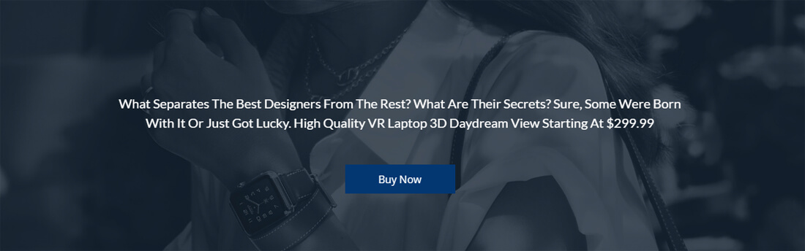
Configure SP: Full Promo Widget (Pro)
- Login into your WordPress site and open the Administration Panel.
- Go to Dashboard > Appearance > Widgets
- Open > Widgets > Sparkle : Main Widget Area or SP: Top FullWidth Widget Area (Pro) or SP: Buttom FullWidth Widget Area (Pro)
- Drag & Drop "SP: Full Promo Widget (Pro)" & Manage All SP: Full Promo Widget (Pro) Widget Options Per as You Want
- Click Save > Publish.
Promo Widget Section
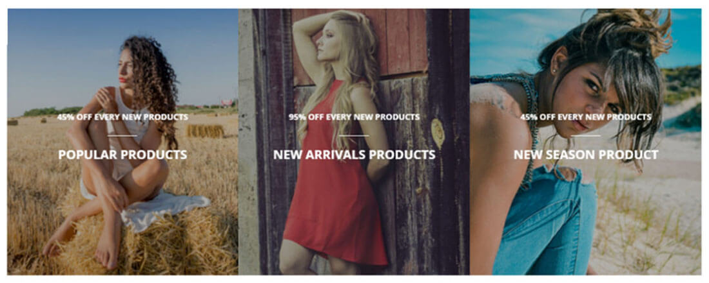
Create Page for Promo Widget Section
- Login into your WordPress site and open the Administration Panel.
- First of all, create a Page for Promo Widget Section
- Add Page Title,Excerpt/Content and feature Image for Promo Widget Section section in page field.
- Click Save > Publish.
Configure Promo Widget Section
- Login into your WordPress site and open the Administration Panel.
- Go to Dashboard > Appearance > Widgets
- Open > Widgets > Sparkle : Main Widget Area or SP: Top FullWidth Widget Area (Pro) or SP: Buttom FullWidth Widget Area (Pro)
- Drag & Drop "SP : Promo Widget Section" & Manage promo widget section options per as you want
- Click Save > Publish.
Full Promo Widget Section
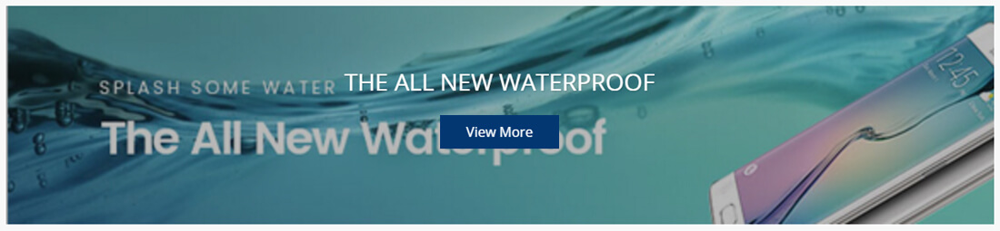
Create Page for Full Promo Widget Section
- Login into your WordPress site and open the Administration Panel.
- First of all, create a Page for Full Promo Widget Section
- Add Page Title,Excerpt/Content and feature Image for Full Promo Widget Section in page field.
- Click Save > Publish.
Configure Full Promo Widget Section
- Login into your WordPress site and open the Administration Panel.
- Go to Dashboard > Appearance > Widgets
- Open > Widgets > Sparkle : Main Widget Area or SP: Top FullWidth Widget Area (Pro) or SP: Buttom FullWidth Widget Area (Pro)
- Drag & Drop "SP : Full Promo Widget" & Manage Full promo widget options per as you want
- Click Save > Publish.
Quick Services Area Settings
Quick Services Area Settings
- Login into your WordPress site and open the Administration Panel.
- Go to Dashboard > Appearance > Customize
- Open > Qucik Services Area
- Quick Services > Manage all the options per as you want.
- Click Save & Publish.
WooCommerce Settings
In this theme, we have included Advance Options of WooCommerce Archive/Category Product Single Page, etc.
Products Pages Settings
- Login into your WordPress site and open the Administration Panel.
- Go to Dashboard > Appearance > Customize > WooCommerce Settings.
- Open > WooCommerce Settings
- You can now customize all the setting from here as shown in below image.
- Click Save & Publish.
Single Products and Category Page
- Login into your WordPress site and open the Administration Panel.
- Go to Dashboard > Appearance > Customize > WooCommerce Settings
- Open > WooCommerce Settings > Single Products and Category Page
- Single Products and Category Page > Manage Product Single Page all the options per as you want. (you can see the image reference below)
- Click Save & Publish.
Advanced Settings
This theme supports the Custom CSS, which overwrites the CSS of the main stylesheet file, so that you can apply some CSS to change the look of the site as you desire. Also, this changes will still remain even if you update the theme.
Additional CSS
- Go to Appearance > Customize > Additional CSS
- Open > Additional CSS > Add Custom CSS per as you want
- Click Save & Publish.